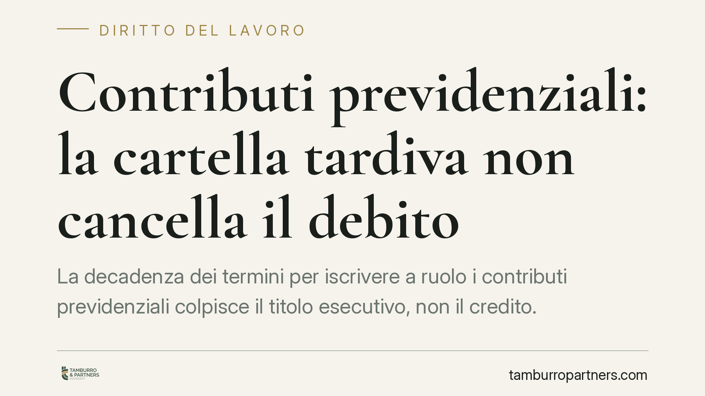

Contributi previdenziali: la cartella tardiva non cancella il debito
La decadenza dei termini per iscrivere a ruolo i contributi previdenziali colpisce il titolo esecutivo, non il credito. In altre parole: la cartella tardiva perde efficacia, ma la Cassa può comunque agire per ottenere il pagamento in via ordinaria. Per il professionista debitore la vera linea difensiva resta la prescrizione quinquennale, non il vizio formale del ruolo.

Il fatto
Un professionista iscritto alla propria Cassa previdenziale riceve una cartella di pagamento per contributi non versati. La cartella, però, viene emessa dopo la scadenza del termine di decadenza previsto per l'iscrizione a ruolo. La tentazione è comprensibile: se la cartella è tardiva, il debito è cancellato. Non è così.
La questione tocca un punto che genera equivoci ricorrenti: la differenza tra il titolo esecutivo (la cartella, cioè lo strumento con cui si pretende il pagamento in via coattiva) e il credito sostanziale (il diritto della Cassa a percepire i contributi). Sono due piani distinti, con conseguenze diverse.
Inquadramento normativo
L'art. 25 del D.lgs. 46/1999 fissa i termini di decadenza entro cui i crediti previdenziali devono essere iscritti a ruolo dagli enti impositori. Il superamento di quei termini produce la decadenza dall'iscrizione a ruolo: l'ente non può più agire tramite quello specifico strumento, e la cartella diventa inefficace.
Qui sta il punto dirimente. Secondo l'orientamento consolidato della Sezione Lavoro della Cassazione, la decadenza prevista dall'art. 25 D.lgs. 46/1999 incide soltanto sulla riscossione a mezzo ruolo, non sull'esistenza del credito. L'ente decaduto perde la via privilegiata della cartella, ma conserva il diritto di far valere il credito con un'ordinaria azione di accertamento e condanna davanti al giudice del lavoro. La decadenza dal ruolo non equivale a estinzione del debito.
È un principio ribadito più volte dalla giurisprudenza di legittimità, che tiene fermi due profili: la decadenza sanziona l'inerzia dell'ente sul piano dello strumento esecutivo; il credito resta dovuto finché non interviene un fatto estintivo autonomo, tipicamente la prescrizione.
La prescrizione: qui si gioca la difesa
Se la decadenza dal ruolo non cancella il credito, cosa lo estingue davvero? La prescrizione. I contributi previdenziali si prescrivono, di regola, in cinque anni (art. 3, commi 9 e 10, L. 335/1995). Trascorso quel termine senza atti interruttivi validi, il credito si estingue in modo definitivo e non è più esigibile in alcuna forma, né tramite cartella né tramite azione ordinaria.
La conseguenza pratica è netta: contestare la sola tardività della cartella serve a poco se il credito è ancora nei termini di prescrizione, perché l'ente potrà riproporre la pretesa per altra via. La verifica prioritaria, quindi, non è la data della cartella, ma il decorso del quinquennio e l'eventuale esistenza di atti interruttivi (solleciti, precedenti cartelle, diffide notificate).
Un chiarimento sui termini del silenzio
Va evitato un equivoco frequente: il silenzio dell'ente su un ricorso amministrativo previdenziale non produce l'annullamento automatico della pretesa. Il silenzio-rigetto sui ricorsi amministrativi in materia previdenziale matura, secondo la disciplina generale, in tempi definiti (per i ricorsi INPS il termine di riferimento è di 90 giorni ex art. 46 L. 88/1989). Il decorso di quel termine consente di adire il giudice, ma non cancella di per sé il debito. Non esistono automatismi che, per effetto del solo silenzio, estinguano il credito contributivo.
Implicazioni pratiche
Per il professionista destinatario di una cartella tardiva il messaggio è duplice. Da un lato, la cartella emessa oltre i termini dell'art. 25 D.lgs. 46/1999 è aggredibile e può essere annullata come titolo esecutivo. Dall'altro, l'annullamento della cartella non chiude la partita: la Cassa può ancora agire se il credito non è prescritto.
Concentrare la difesa esclusivamente sul vizio formale del ruolo è una strategia parziale. La verifica va costruita su entrambi i fronti: efficacia del titolo e sopravvivenza del credito.
Cosa fare in concreto
- Verifica le date. Controlla la data di notifica della cartella e confrontala con i termini di decadenza dell'art. 25 D.lgs. 46/1999.
- Ricostruisci il decorso della prescrizione. Individua l'anno di competenza dei contributi e conta il quinquennio, tenendo conto di eventuali atti interruttivi notificati.
- Recupera tutta la corrispondenza. Conserva solleciti, diffide, precedenti cartelle: ogni atto può aver interrotto la prescrizione.
- Non fermarti al vizio formale. Se il credito è ancora nei termini, valuta anche la posizione sul merito del dovuto.
- Agisci nei termini di impugnazione. L'opposizione a cartella ha scadenze rigorose: consigliamo di rivolgersi tempestivamente a un professionista per non pregiudicare la difesa.
---
Contributo informativo a cura di Tamburro & Partners - Avv. Giuseppe Tamburro. Non costituisce parere legale.
Ogni storia di lavoro ha i suoi tempi.
Se gestisci HR e vuoi un confronto su contenzioso, ispezioni o licenziamenti, scrivi allo studio. Ti rispondiamo entro un giorno lavorativo.